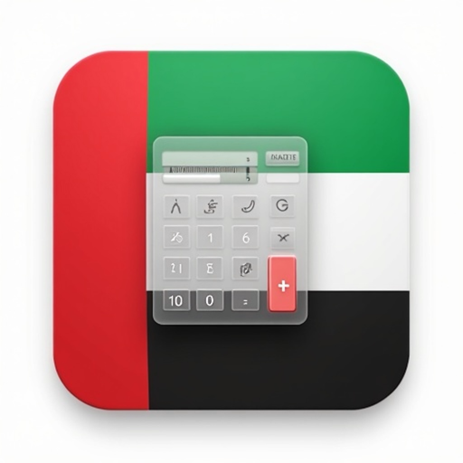
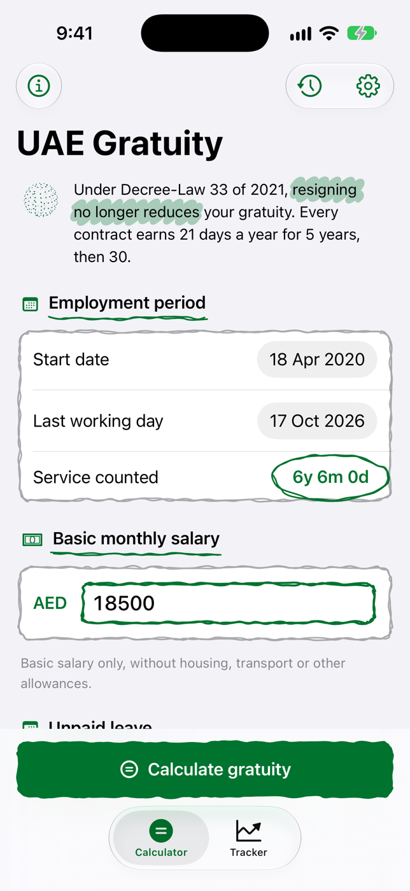
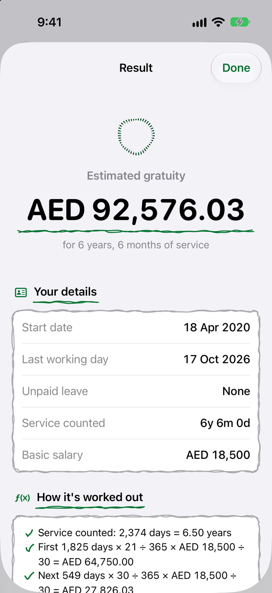
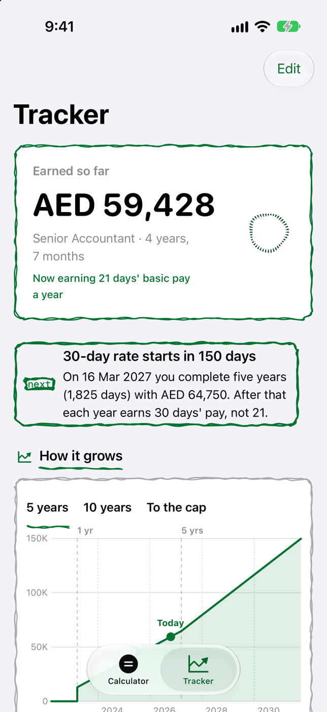
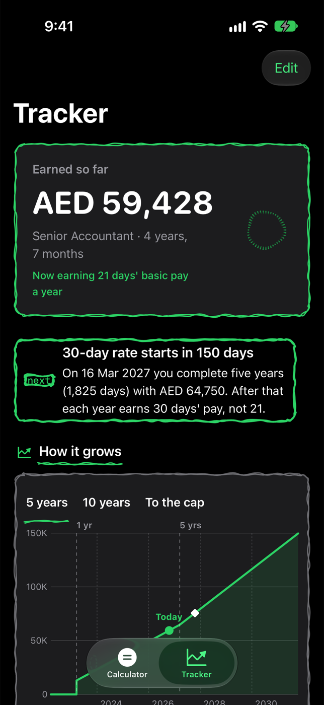

Gratuity Calculator: UAE
End of service gratuity, Tracker and Siri · App Store · updated 17 October 2026
What is new
Refreshed App Store page with new screenshots. The Calculator tab breaks the result into the 21-day and 30-day tiers and the two-year cap, with the working shown step by step, a History list and a share button. The Tracker tab holds a saved job and shows the gratuity earned so far, the next milestone with its date and amount, and a growth chart for 5 years, 10 years or to the cap. Siri and Shortcuts answer how much gratuity has been earned. iPhone Duo layouts open like a ledger or stand in tabletop pose.
Facts
- Version
- 1.4.2 (build 2026101502, resubmitted 15 October 2026), built with Xcode 27.1
- Platforms
- iPhone, iPad, iPhone Duo
- Languages
- English (US, UK, Australia, Canada), Spanish (Mexico)
- Privacy
- The app says your job details stay on this device.
- Accessibility
- Accessibility labels and identifiers on the main controls; not audited further.
- Window
- Submitted nominations run from 28 October 2026 into the new year; the contract-renewal one covers 16 November to 31 December.
- Developer
- Hemal Modi
Screens
Device captures of the screens described in the nomination. No marketing frames.



